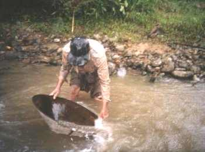
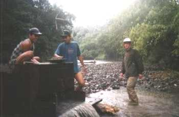
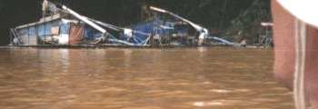
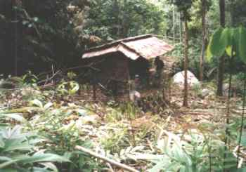
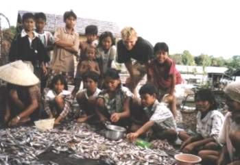
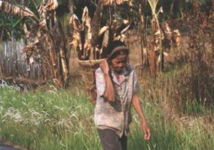

|  |
Toen we vanuit Tao met een bootje naar de watervallen gingen, kwamen we deze goudzoeker tegen (zie kaart) |
|  |
Deze goudzoekmachine brengt de rivierbodem naar boven. |
|  |
In de buurt van Nangaella zijn veel van dit soort goudzoekmachines langs de rivier te zien. Soms zoekt men dagen of weken zonder resultaat. |
|  |
Dit soort hutjes staan vaak bij akkertjes en rijstveldjes. Handig tegen de felle zon of de harde regen... Dit was in Sukadana. |
|  |
Enkele tientallen mensen (inclusief kinderen) prepareren de visvangst, zodat de vissen in de zon kunnen worden gedroogd. |
|  |
Een vrouw komt terug van haar akkertje. |